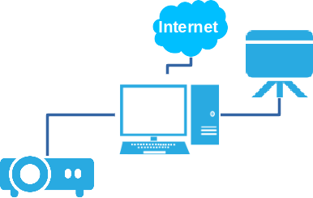
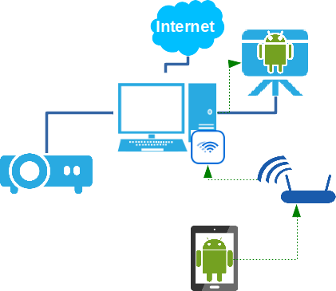
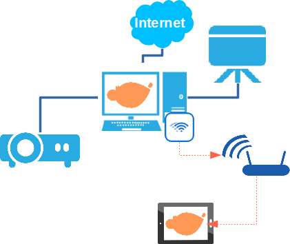
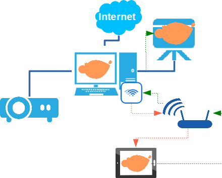

Guia i configuració de l'aula
La principal novetat del model presentat es troba en la introducció de les tauletes digitals i la seua integració a la infrastructura de l'aula. Partint de les aules actuals, on disposem d'un ordinador, una tauleta digital i un canó projector, introduïm en aquest entorn les tauletes digitals. Com s'ha comentat anteriorment, les tauletes suposen un nou recurs, innovador, i que aporta una gran quantitat de recursos en forma d'apps, que no poden utilitzar-se a l'ordinador. Per una altra banda, el tamany i la versatilitat de les tauletes, possibiliten l'accés a les TIC a alumnes amb mobilitat reduïda o amb alguna discapacitat cognitiva o retard que fa que l'aparició d'ombres a la projecció provoque confussions.
Requeriments de l'aula per a la interconnexió tauleta-ordinador-PDI
Recordem que un dels objectius que ens vam plantejar amb l'ús de tauletes, a més de facilitar l'áccés a les TIC als alumnes amb mobilitat reduida, era fer possible també que el treball que l'alumne està realitzant a la tauleta puga ser compartit amb els companys a través del canó projector. En aquest sentit, es van valorar diverses opcions, des de l'ús de dispositius tipus chromecast a aplicacions per a la connexió.
La proposta que fem, passa per fer ús de l'ordinador de l'aula com a pont entre el projector i les tauletes, a través d'una xarxa inalàmbrica a l'aula i diverses aplicacions per a l'ordinador i la tauleta.
Donada la infrastructura actual d'una aula, com es mostra al següent gràfic:

La introducció de connexions inalàmbriques i tauletes, ens possibilita dos escenaris diferents:
Escenari 1. Mirroring.

En aquest escenari, disposem d'una connexió inalàmbrica a l'aula, a través de la qual, la tauleta es comunica amb l'ordinador, i aquest amb el projector, de manera que el treball que l'alumne està fent, puga ser compartit amb la resta a través del projector.
Escenari 2. Servidor gràfic de LliureX.

Aquest altre escenari, consisteix a, a través de les connexions inalàmbriques establertes, i fent servir la tauleta com a servidor gràfic, poder executar aplicacions disponibles a LliureX a la pròpia tauleta, tals com activitats Jclic, GCompris, Childsplay, etc.
Escenari 3. Combinació d'escenaris

Aquest tercer escenari és una combinació dels dos anteriors. Amb la tauleta fent com a servidor gràfic, llancem en ella aplicacions educatives del propi LliureX (escenari 2), i al mateix temps, la resta de companys, poden veure què està fent el company amb la tauleta a través de la projecció a la PDI (escenari 1).
Què necessitem?
Per tal d'establir les connexions ente els diferents dispositius, podem plantejar-nos diferents possibilitats:
- Utilitzar punts d'accés inalàmbrics connectats a la xarxa del centre, als quals es connecten les tauletes, fent possible la seua interconnexió amb els ordinadors.
- Utilitzar punts d'accés a cada aula, amb xarxes diferents, i targetes inalàmbriques (o una addicional de xarxa connectada a l'AP) per tal de connectar l'ordinador de l'aula amb el projector.
El principal inconvenient del primer punt, radica en que fer ús de la mateixa xarxa per a diferents aules, pot portar a confusió entre els dispositius, de manera que es puga comunicar una tauleta d'una aula amb el projector d'una aula diferent. Per tal d'evitar açò, tot i que s'incrementa el nombre de punts d'accés, la segona opció sembla més raonable.